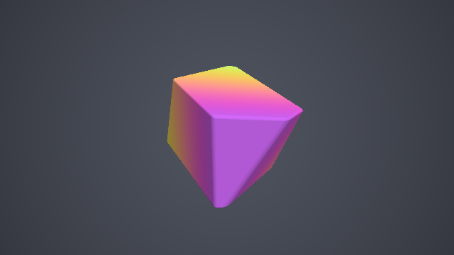
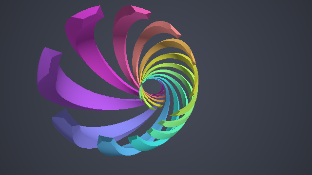
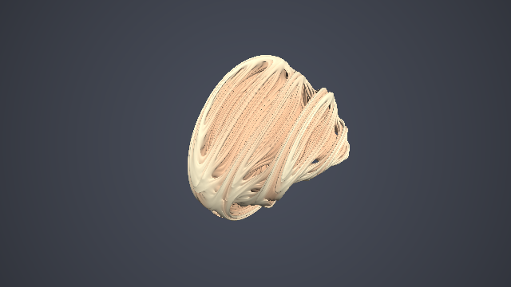

第 14 章 4 次元の形状
SDF は任意の次元で定義できる。第 3 章の箱の SDF は、ベクトルの成分が 4 つになってもそのまま成り立つ。この章では、4 次元の空間にある形状を、3 次元の画面に描く方法を扱う。4 次元の形状を直接見ることはできないので、3 次元の断面を見る方法と、ステレオ投影で 3 次元に写す方法の 2 つを説明する。最後に、4 次元のフラクタルである四元数ジュリア集合を描く。
4 次元の形状を見る方法
4 次元の点を \(\mathbf{q} = (x, y, z, w)\) と表す。4 次元の形状を 3 次元の画面に描くには、何らかの方法で 3 次元の形状に変換する必要がある。主な方法には次のものがある。
方法 |
内容 |
特徴 |
|---|---|---|
断面 |
4 次元の形状を 3 次元の超平面（例えば \(w = 0\)）で切った断面を描く |
実装が簡単で、距離の下界が得られる。形状の一部しか見えない。 |
透視投影 |
4 次元の視点から、3 次元の「スクリーン」に投影する |
形状全体が見えるが、重なりが多く分かりにくい。 |
ステレオ投影 |
3 次元球面 \(S^3\) 上の形状を、1 点から 3 次元空間に投影する |
角度を保つ等角写像で、形が崩れにくい。\(S^3\) 上の形状に限られる。 |
どの方法でも、4 次元での回転を加えると、3 次元の像が大きく変化する。4 次元の回転は、6 つの座標平面（\(xy, xz, xw, yz, yw, zw\)）それぞれでの 2 次元の回転の組み合わせで表せる。このうち \(xw, yw, zw\) 平面の回転は、3 次元には対応するものが無い回転である。サンプルでは、第 4 章の 2 次元の回転行列を、4 次元の点の 2 つの成分に適用して回転させる。
3 次元の断面
4 次元の点 \(\mathbf{q}\) から形状までの距離を \(f_4(\mathbf{q})\) とする。3 次元の点 \(\mathbf{p}\) を 4 次元の点 \((\mathbf{p}, 0)\) とみなして \(f_4\) を評価すると、\(w = 0\) の断面の SDF が得られる。4 次元での最短距離は、断面の中だけで測った最短距離以下なので、この値は断面の SDF の下界になる。したがって、そのままスフィアトレーシングに使える。
次のサンプルは、4 次元の超立方体（テッセラクト）を 4 次元で回転させ、\(w = 0\) の断面を描く。4 次元の箱の SDF は、第 3 章の箱の式の成分を 4 つにしたものである。
18// 4 次元の角丸の箱。3 次元の箱 (第 3 章) の式が、そのまま 4 次元でも成り立つ
19float sdBox4(vec4 p, vec4 b, float r)
20{
21 vec4 q = abs(p) - b + r;
22 return length(max(q, 0.0)) +
23 min(max(max(q.x, q.y), max(q.z, q.w)), 0.0) - r;
24}
25
26// 4 次元の点を回転させる。xw 平面と zw 平面の回転は、3 次元には無い回転である
27vec4 rotate4(vec4 p, float time)
28{
29 p.xw = rot(0.7 * time) * p.xw;
30 p.zw = rot(0.45 * time) * p.zw;
31 p.xy = rot(0.3) * p.xy;
32 return p;
33}
34
35// 3 次元の点 p を 4 次元の点 (p, 0) とみなし、回転させた超立方体の SDF を評価する。
36// 4 次元の距離は、断面の中での距離以下なので、距離の下界として使える
37float map(vec3 p)
38{
39 vec4 q = rotate4(vec4(p, 0.0), iTime);
40 return sdBox4(q, vec4(1.0), 0.05);
41}
14_slice.frag をダウンロード ｜ ブラウザーで実行

14_slice.frag の実行結果。4 次元での回転に伴って、断面は立方体から、角を切り落とした多面体へと形を変えていく。
回転していないとき、断面は立方体になる。\(xw\) 平面だけで回転させると、断面は \(x\) 方向に伸びた直方体になる。さらに \(zw\) 平面の回転を加えると、断面は角が切り落とされた多面体になる。3 次元の立方体を平面で斜めに切ると、断面が正方形から六角形まで変化するのと同じ現象である。色は、断面上の点の 4 次元での \(w\) 座標（回転後）で付けている。
ステレオ投影
3 次元球面とステレオ投影
4 次元空間の単位球面 \(S^3 = \{\mathbf{q} \mid |\mathbf{q}| = 1\}\) は、3 次元の広がりを持つ曲がった空間である。2 次元の球面（地球の表面）を平面の地図に描くのと同じように、\(S^3\) は 3 次元空間に投影できる。
ステレオ投影は、球面上の 1 点（投影の中心、ここでは \((0, 0, 0, 1)\)）から、球面上の各点を通る直線を引き、\(w = 0\) の空間と交わる点に写す方法である。レイマーチングでは、3 次元の点 \(\mathbf{p}\) がどの \(S^3\) 上の点に対応するかが必要なので、逆向きの写像（逆ステレオ投影）を使う。
原点は \((0, 0, 0, -1)\) に、無限遠点は投影の中心に写る。
距離の補正
ステレオ投影は等角写像であり、各点の近くでは一様な拡大縮小として振る舞う。逆ステレオ投影の拡大率は次のとおりである。
つまり、3 次元での小さな長さ \(\delta\) は、\(S^3\) 上では \(\lambda \delta\) になる。したがって、\(S^3\) 上で測った形状までの距離 \(d_S\) を \(\lambda\) で割れば、3 次元での距離の近似が得られる。
拡大率は場所によって変わるので、この値は厳密な距離ではない。形状から離れた点では、距離を過大評価することもある。そのため、第 9 章で説明したように歩幅を小さくして（サンプルでは 0.7 倍）スフィアトレーシングを行う。
クリフォードトーラスとホップファイバー
\(S^3\) 上の点は、2 つの複素数 \((z_1, z_2) = (x + iy,\ z + iw)\) を使って、次のように表せる。
\(\alpha\) を一定にした点の集合はトーラスになり、特に \(\alpha = \pi/4\) のものをクリフォードトーラスと呼ぶ。\(\alpha\) が一定のトーラス同士は \(S^3\) 上で等間隔に並んでいるので、\(|\alpha - \pi/4|\) はクリフォードトーラスまでの \(S^3\) 上の距離そのものになる。
さらに、\(\phi_1 - \phi_2\) が一定の曲線は、\(S^3\) 上の大円になる。これは点 \((z_1, z_2)\) を \((e^{it} z_1,\ e^{it} z_2)\) と回したときの軌跡で、ホップファイバーと呼ばれる。サンプルでは、クリフォードトーラスをホップファイバーに沿った 12 本のリボンに切り分けている。トーラス上で、ファイバーに垂直な方向に測った距離は、\(\phi_1 - \phi_2\) の差の半分になる。
22// 3 次元の点 p を、逆ステレオ投影で S^3 (4 次元の単位球面) 上の点に写す。
23// 投影の中心は (0, 0, 0, 1)
24vec4 inverseStereographic(vec3 p)
25{
26 float r2 = dot(p, p);
27 return vec4(2.0 * p, r2 - 1.0) / (r2 + 1.0);
28}
29
30// S^3 上の点 q から、リボン状に切ったクリフォードトーラスまでの距離 (S^3 上の距離)。
31// 戻り値の y にはリボンの番号を返す
32vec2 sdRibbonTorus(vec4 q)
33{
34 // q = (cos α e^{iφ1}, sin α e^{iφ2}) と表したときの α、φ1、φ2
35 float alpha = atan(length(q.zw), length(q.xy));
36 float phi1 = atan(q.y, q.x);
37 float phi2 = atan(q.w, q.z);
38
39 // α = π / 4 のトーラス (クリフォードトーラス) からの距離。厚さは 0.03
40 float shell = abs(alpha - 0.25 * PI) - 0.03;
41
42 // φ1 - φ2 が一定の曲線はホップファイバー (S^3 上の大円) になる。
43 // その方向に沿ったリボンに切り分ける (トーラス上の距離は角度の差の半分)
44 float u = phi1 - phi2;
45 float period = 2.0 * PI / RIBBONS;
46 float id = round(u / period);
47 float ribbon = 0.5 * abs(u - id * period) - 0.06;
48
49 return vec2(max(shell, ribbon), mod(id, RIBBONS));
50}
51
52// 3 次元での距離の近似と、リボンの番号を返す
53vec2 map(vec3 p)
54{
55 vec4 q = inverseStereographic(p);
56 // 4 次元で回転させる (S^3 はどの回転でも自分自身に写る)
57 q.xw = rot(0.3 * iTime) * q.xw;
58 q.yz = rot(0.2 * iTime) * q.yz;
59 vec2 res = sdRibbonTorus(q);
60 // 逆ステレオ投影は局所的に 2 / (1 + |p|^2) 倍の拡大なので、
61 // S^3 上の距離をその倍率で割って 3 次元の距離に直す
62 res.x *= 0.5 * (1.0 + dot(p, p));
63 return res;
64}
14_stereographic.frag をダウンロード ｜ ブラウザーで実行

14_stereographic.frag の実行結果。各リボンは 1 本のホップファイバーに沿っており、互いに鎖のように絡み合っている。
\(S^3\) はどの 4 次元の回転でも自分自身に写るので、\(S^3\) 上の点を回転させてから距離を評価すれば、形状を 4 次元で回転させられる。回転によって形状の一部が投影の中心に近づくと、その部分は 3 次元では遠くまで大きく広がって写る。
四元数ジュリア集合
第 13 章のマンデルバルブは、複素数の漸化式を 3 次元に拡張したものであった。複素数を 4 次元の数である四元数に置き換えると、4 次元のフラクタルが得られる。四元数 \(\mathbf{q} = (a, \mathbf{v})\) （\(a\) は実部、\(\mathbf{v}\) は 3 次元の虚部）の 2 乗は次のようになる。
定数 \(\mathbf{c}\) を固定し、点 \(\mathbf{z}_0\) から漸化式 \(\mathbf{z}_{k+1} = \mathbf{z}_k^2 + \mathbf{c}\) を反復したときに発散しない点の集合を、四元数ジュリア集合と呼ぶ。距離推定関数は、マンデルバルブと同じ形になる。
ジュリア集合では漸化式の初期値が点そのものなので、\(|\mathbf{z}'_0| = 1\) から始め、マンデルバルブのように \(+1\) を加えない。サンプルでは、平方根の計算を減らすため、\(|\mathbf{z}|^2\) と \(|\mathbf{z}'|^2\) を使って計算している。
12// 四元数の 2 乗: (a, v)^2 = (a^2 - v・v, 2 a v)。ここでは x を実部とする
13vec4 quatSquare(vec4 q)
14{
15 return vec4(q.x * q.x - dot(q.yzw, q.yzw), 2.0 * q.x * q.yzw);
16}
17
18// 四元数ジュリア集合の距離推定関数 (第 13 章のマンデルバルブと同じ形)。
19// trap には軌道が原点に最も近づいた距離の 2 乗を返す
20float sdJulia(vec3 p, vec4 c, out float trap)
21{
22 vec4 z = vec4(p, 0.0);
23 float dz2 = 1.0; // |dz/dz0|^2
24 float z2 = dot(z, z); // |z|^2
25 trap = z2;
26 for (int i = 0; i < ITERATIONS; i++) {
27 dz2 *= 4.0 * z2; // |z'| <- 2 |z| |z'|
28 z = quatSquare(z) + c;
29 z2 = dot(z, z);
30 trap = min(trap, z2);
31 if (z2 > 256.0) {
32 break;
33 }
34 }
35 // d = 0.5 |z| log|z| / |z'| を 2 乗の値から計算する
36 return 0.25 * log(z2) * sqrt(z2 / dz2);
37}
14_julia.frag をダウンロード ｜ ブラウザーで実行

14_julia.frag の実行結果。\(w = 0\) の 3 次元の断面を描いている。
四元数ジュリア集合は 4 次元の形状なので、描いているのは 3 次元の断面である。定数 \(\mathbf{c}\) を時間とともに少しずつ変えると、形状が滑らかに変化する。断面の位置（\(w\) の値）を変えたり、\(\mathbf{z}_0\) に 4 次元の回転を加えたりしても、異なる形の断面が得られる。